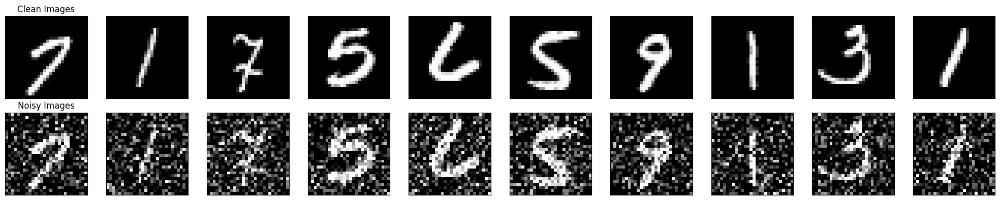
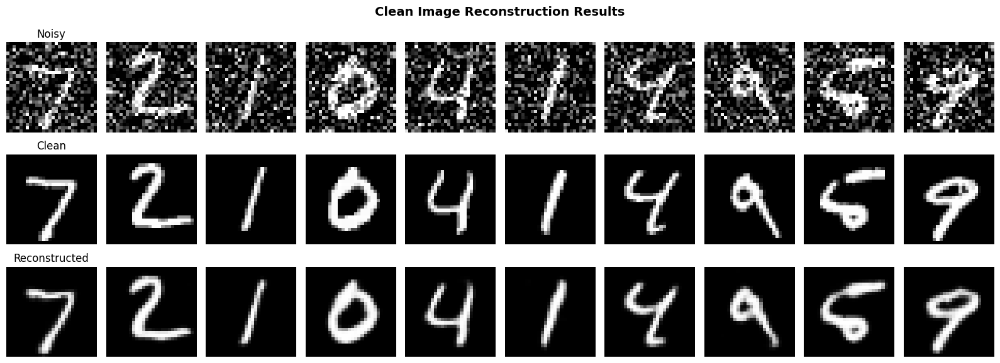
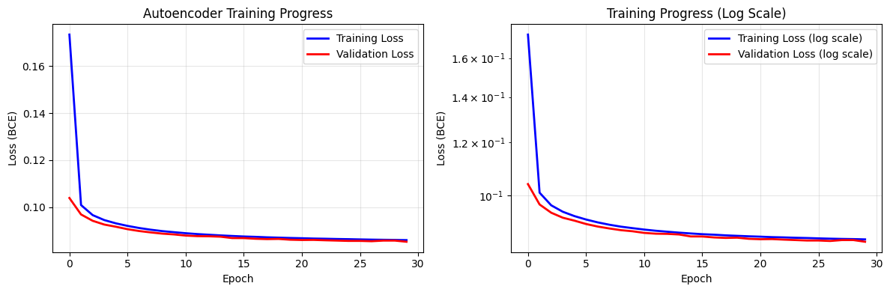
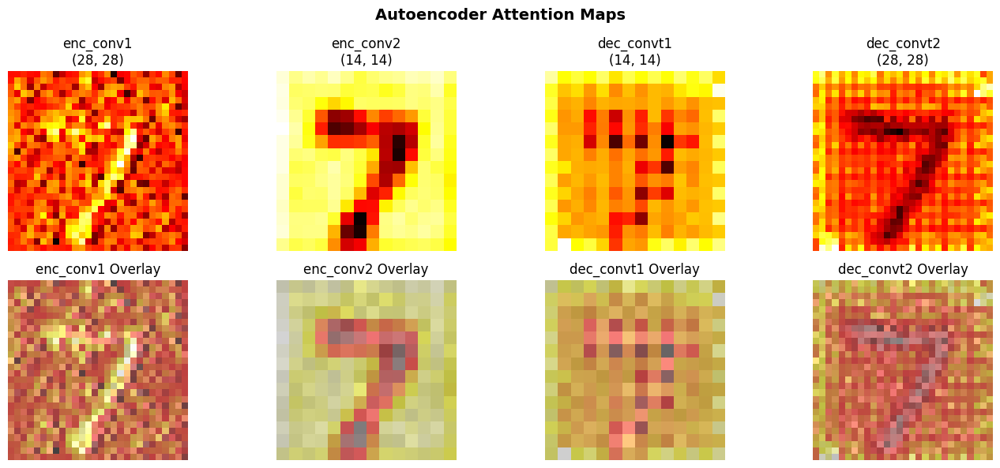

Aim: Train a Recurrent Neural Network (RNN) on the IMDB large movie review dataset for sentiment analysis. Pratham Goyal A2345924079 4CSE-2eve
This notebook demonstrates the implementation of a Convolutional Autoencoder that can denoise corrupted images. The autoencoder learns to map noisy images back to clean images through an encoder-decoder architecture.
Topics covered:
# ============================================================================
# IMPORTS - Core Libraries
# ============================================================================
import torch
import torch.nn as nn
import torch.optim as optim
from torch.utils.data import DataLoader, TensorDataset
import torchvision.datasets as datasets
import torchvision.transforms as transforms
from torchsummary import summary
import matplotlib.pyplot as plt
import numpy as np
from matplotlib.colors import Normalize
from matplotlib.cm import ScalarMappable
import warnings
warnings.filterwarnings('ignore')
# Device configuration
DEVICE = torch.device('cuda' if torch.cuda.is_available() else 'cpu')
print(f"Using device: {DEVICE}")Using device: cpu
Import essential packages for data handling, modeling, and visualization.
# ============================================================================
# DATA PREPROCESSING FUNCTIONS
# ============================================================================
def preprocess(array):
"""
Normalize image array to [0, 1] range and reshape for model input
Args:
array: Input image array
Returns:
Normalized and reshaped array
"""
array = array.astype("float32") / 255.0
array = np.reshape(array, (len(array), 1, 28, 28)) # PyTorch format: (N, C, H, W)
return array
def add_noise(array, noise_factor=0.4):
"""
Add Gaussian noise to images for denoising task
Args:
array: Input image array
noise_factor: Standard deviation of noise
Returns:
Noisy image array clipped to [0, 1]
"""
noisy_array = array + noise_factor * np.random.normal(
loc=0.0, scale=1.0, size=array.shape
)
return np.clip(noisy_array, 0.0, 1.0)
def display_images(array1, array2, title1="Original", title2="Processed", num_images=10):
"""
Display comparison of two sets of images side by side
Args:
array1: First set of images
array2: Second set of images
title1: Title for first set
title2: Title for second set
num_images: Number of images to display
"""
n = num_images
indices = np.random.randint(len(array1), size=n)
images1 = array1[indices, :]
images2 = array2[indices, :]
plt.figure(figsize=(20, 4))
for i, (image1, image2) in enumerate(zip(images1, images2)):
# Display first set
ax = plt.subplot(2, n, i + 1)
plt.imshow(image1.reshape(28, 28), cmap='gray')
plt.title(title1 if i == 0 else '')
plt.gray()
ax.get_xaxis().set_visible(False)
ax.get_yaxis().set_visible(False)
# Display second set
ax = plt.subplot(2, n, i + 1 + n)
plt.imshow(image2.reshape(28, 28), cmap='gray')
plt.title(title2 if i == 0 else '')
plt.gray()
ax.get_xaxis().set_visible(False)
ax.get_yaxis().set_visible(False)
plt.tight_layout()
plt.show()
print("Data preprocessing functions defined successfully!")Data preprocessing functions defined successfully!
Define functions to normalize, reshape, and add noise to images.
# ============================================================================
# LOAD AND PREPARE DATASET
# ============================================================================
print("Loading MNIST dataset...")
# Load MNIST dataset
train_dataset = datasets.MNIST(root='./data', train=True, download=True)
test_dataset = datasets.MNIST(root='./data', train=False, download=True)
# Convert to numpy arrays
train_data = train_dataset.data.numpy()
test_data = test_dataset.data.numpy()
# Preprocess: normalize and reshape
train_data_clean = preprocess(train_data)
test_data_clean = preprocess(test_data)
# Add noise to create noisy versions
train_data_noisy = add_noise(train_data_clean, noise_factor=0.4)
test_data_noisy = add_noise(test_data_clean, noise_factor=0.4)
print(f"Dataset loaded successfully!")
print(f"Training samples: {len(train_data_clean)}")
print(f"Test samples: {len(test_data_clean)}")
print(f"Image shape: {train_data_clean[0].shape}")
# Display comparison
display_images(train_data_clean, train_data_noisy,
title1="Clean Images", title2="Noisy Images", num_images=10)Loading MNIST dataset...
100%|██████████| 9.91M/9.91M [00:01<00:00, 6.05MB/s]
100%|██████████| 28.9k/28.9k [00:00<00:00, 165kB/s]
100%|██████████| 1.65M/1.65M [00:01<00:00, 1.54MB/s]
100%|██████████| 4.54k/4.54k [00:00<00:00, 8.67MB/s]
Dataset loaded successfully!
Training samples: 60000
Test samples: 10000
Image shape: (1, 28, 28)

Load MNIST dataset and prepare clean and noisy versions.
# ============================================================================
# AUTOENCODER ARCHITECTURE
# ============================================================================
class ConvAutoencoder(nn.Module):
"""
Convolutional Autoencoder for Image Denoising
Architecture:
Encoder: Conv2D -> MaxPool -> Conv2D -> MaxPool
Decoder: ConvTranspose2D -> ConvTranspose2D -> Conv2D
Input: (1, 28, 28) noisy image
Output: (1, 28, 28) reconstructed clean image
"""
def __init__(self):
super(ConvAutoencoder, self).__init__()
# ============ ENCODER ============
# Layer 1: (1, 28, 28) -> (32, 14, 14)
self.enc_conv1 = nn.Conv2d(1, 32, kernel_size=3, stride=1, padding=1)
self.enc_relu1 = nn.ReLU()
self.enc_pool1 = nn.MaxPool2d(2, 2)
# Layer 2: (32, 14, 14) -> (32, 7, 7)
self.enc_conv2 = nn.Conv2d(32, 32, kernel_size=3, stride=1, padding=1)
self.enc_relu2 = nn.ReLU()
self.enc_pool2 = nn.MaxPool2d(2, 2)
# ============ DECODER ============
# Layer 1: (32, 7, 7) -> (32, 14, 14)
self.dec_convt1 = nn.ConvTranspose2d(32, 32, kernel_size=3, stride=2,
padding=1, output_padding=1)
self.dec_relu1 = nn.ReLU()
# Layer 2: (32, 14, 14) -> (32, 28, 28)
self.dec_convt2 = nn.ConvTranspose2d(32, 32, kernel_size=3, stride=2,
padding=1, output_padding=1)
self.dec_relu2 = nn.ReLU()
# Layer 3: (32, 28, 28) -> (1, 28, 28)
self.dec_conv3 = nn.Conv2d(32, 1, kernel_size=3, stride=1, padding=1)
self.dec_sigmoid = nn.Sigmoid() # Output in [0, 1]
def encode(self, x):
"""Encoder forward pass"""
x = self.enc_conv1(x)
x = self.enc_relu1(x)
x = self.enc_pool1(x)
x = self.enc_conv2(x)
x = self.enc_relu2(x)
x = self.enc_pool2(x)
return x
def decode(self, x):
"""Decoder forward pass"""
x = self.dec_convt1(x)
x = self.dec_relu1(x)
x = self.dec_convt2(x)
x = self.dec_relu2(x)
x = self.dec_conv3(x)
x = self.dec_sigmoid(x)
return x
def forward(self, x):
"""
Forward pass through autoencoder
Args:
x: Input image (batch_size, 1, 28, 28)
Returns:
Reconstructed image (batch_size, 1, 28, 28)
"""
encoded = self.encode(x)
decoded = self.decode(encoded)
return decoded
# Initialize autoencoder
autoencoder = ConvAutoencoder().to(DEVICE)
print("\n" + "="*70)
print("AUTOENCODER ARCHITECTURE")
print("="*70)
try:
summary(autoencoder, input_size=(1, 28, 28), device=DEVICE.type)
except:
print("Autoencoder created successfully!")
print(f"Total parameters: {sum(p.numel() for p in autoencoder.parameters()):,}")
======================================================================
AUTOENCODER ARCHITECTURE
======================================================================
----------------------------------------------------------------
Layer (type) Output Shape Param #
================================================================
Conv2d-1 [-1, 32, 28, 28] 320
ReLU-2 [-1, 32, 28, 28] 0
MaxPool2d-3 [-1, 32, 14, 14] 0
Conv2d-4 [-1, 32, 14, 14] 9,248
ReLU-5 [-1, 32, 14, 14] 0
MaxPool2d-6 [-1, 32, 7, 7] 0
ConvTranspose2d-7 [-1, 32, 14, 14] 9,248
ReLU-8 [-1, 32, 14, 14] 0
ConvTranspose2d-9 [-1, 32, 28, 28] 9,248
ReLU-10 [-1, 32, 28, 28] 0
Conv2d-11 [-1, 1, 28, 28] 289
Sigmoid-12 [-1, 1, 28, 28] 0
================================================================
Total params: 28,353
Trainable params: 28,353
Non-trainable params: 0
----------------------------------------------------------------
Input size (MB): 0.00
Forward/backward pass size (MB): 1.03
Params size (MB): 0.11
Estimated Total Size (MB): 1.14
----------------------------------------------------------------
Define the convolutional autoencoder with encoder and decoder components.
# ============================================================================
# TRAINING SETUP
# ============================================================================
# Loss function - Binary Cross Entropy for pixel-wise reconstruction
criterion = nn.BCELoss()
# Optimizer - Adam with standard learning rate
learning_rate = 1e-3
optimizer = optim.Adam(autoencoder.parameters(), lr=learning_rate)
# Training parameters
EPOCHS = 30
BATCH_SIZE = 128
train_loader = DataLoader(TensorDataset(torch.from_numpy(train_data_noisy),
torch.from_numpy(train_data_clean)),
batch_size=BATCH_SIZE, shuffle=True)
test_loader = DataLoader(TensorDataset(torch.from_numpy(test_data_noisy),
torch.from_numpy(test_data_clean)),
batch_size=BATCH_SIZE, shuffle=False)
print(f"Training configuration:")
print(f" Loss function: Binary Cross Entropy")
print(f" Optimizer: Adam (lr={learning_rate})")
print(f" Epochs: {EPOCHS}")
print(f" Batch size: {BATCH_SIZE}")
print(f" Training batches: {len(train_loader)}")
print(f" Test batches: {len(test_loader)}")Training configuration:
Loss function: Binary Cross Entropy
Optimizer: Adam (lr=0.001)
Epochs: 30
Batch size: 128
Training batches: 469
Test batches: 79
Configure loss function and optimizer for training.
# ============================================================================
# TRAINING LOOP - Clean Image Reconstruction
# ============================================================================
print("\n" + "="*70)
print("TRAINING AUTOENCODER")
print("="*70 + "\n")
train_losses = []
test_losses = []
for epoch in range(EPOCHS):
# ============ TRAINING ============
autoencoder.train()
train_loss = 0.0
for noisy_images, clean_images in train_loader:
noisy_images = noisy_images.float().to(DEVICE)
clean_images = clean_images.float().to(DEVICE)
# Forward pass
reconstructed = autoencoder(noisy_images)
# Compute loss
loss = criterion(reconstructed, clean_images)
# Backward pass
optimizer.zero_grad()
loss.backward()
optimizer.step()
train_loss += loss.item()
avg_train_loss = train_loss / len(train_loader)
train_losses.append(avg_train_loss)
# ============ VALIDATION ============
autoencoder.eval()
test_loss = 0.0
with torch.no_grad():
for noisy_images, clean_images in test_loader:
noisy_images = noisy_images.float().to(DEVICE)
clean_images = clean_images.float().to(DEVICE)
reconstructed = autoencoder(noisy_images)
loss = criterion(reconstructed, clean_images)
test_loss += loss.item()
avg_test_loss = test_loss / len(test_loader)
test_losses.append(avg_test_loss)
# Print progress
if (epoch + 1) % 5 == 0:
print(f'Epoch [{epoch + 1}/{EPOCHS}] | '
f'Train Loss: {avg_train_loss:.6f} | '
f'Test Loss: {avg_test_loss:.6f}')
print("\n" + "="*70)
print("TRAINING COMPLETED")
print("="*70)
======================================================================
TRAINING AUTOENCODER
======================================================================
Epoch [5/30] | Train Loss: 0.093093 | Test Loss: 0.091654
Epoch [10/30] | Train Loss: 0.089330 | Test Loss: 0.088378
Epoch [15/30] | Train Loss: 0.087719 | Test Loss: 0.086829
Epoch [20/30] | Train Loss: 0.086868 | Test Loss: 0.086123
Epoch [25/30] | Train Loss: 0.086357 | Test Loss: 0.085620
Epoch [30/30] | Train Loss: 0.085956 | Test Loss: 0.085259
======================================================================
TRAINING COMPLETED
======================================================================
Train the autoencoder to denoise images.
# ============================================================================
# EVALUATION ON CLEAN IMAGES
# ============================================================================
print("Evaluating autoencoder on clean test images...")
autoencoder.eval()
# Get a batch of test data
noisy_batch, clean_batch = next(iter(test_loader))
noisy_batch = noisy_batch.float().to(DEVICE)
clean_batch = clean_batch.float().to(DEVICE)
# Generate predictions
with torch.no_grad():
predictions = autoencoder(noisy_batch)
# Convert to numpy for visualization
noisy_np = noisy_batch.cpu().numpy()
clean_np = clean_batch.cpu().numpy()
pred_np = predictions.cpu().numpy()
# Display results
fig, axes = plt.subplots(3, 10, figsize=(16, 6))
for i in range(10):
# Noisy images
axes[0, i].imshow(noisy_np[i, 0], cmap='gray')
axes[0, i].set_title('Noisy' if i == 0 else '')
axes[0, i].axis('off')
# Clean (target) images
axes[1, i].imshow(clean_np[i, 0], cmap='gray')
axes[1, i].set_title('Clean' if i == 0 else '')
axes[1, i].axis('off')
# Reconstructed images
axes[2, i].imshow(pred_np[i, 0], cmap='gray')
axes[2, i].set_title('Reconstructed' if i == 0 else '')
axes[2, i].axis('off')
plt.suptitle('Clean Image Reconstruction Results', fontsize=14, fontweight='bold')
plt.tight_layout()
plt.show()Evaluating autoencoder on clean test images...

Plot training and validation losses over epochs.
# ============================================================================
# VISUALIZE TRAINING PROGRESS
# ============================================================================
plt.figure(figsize=(12, 4))
plt.subplot(1, 2, 1)
plt.plot(train_losses, label='Training Loss', linewidth=2, color='blue')
plt.plot(test_losses, label='Validation Loss', linewidth=2, color='red')
plt.xlabel('Epoch')
plt.ylabel('Loss (BCE)')
plt.title('Autoencoder Training Progress')
plt.legend()
plt.grid(True, alpha=0.3)
plt.subplot(1, 2, 2)
plt.semilogy(train_losses, label='Training Loss (log scale)', linewidth=2, color='blue')
plt.semilogy(test_losses, label='Validation Loss (log scale)', linewidth=2, color='red')
plt.xlabel('Epoch')
plt.ylabel('Loss (BCE)')
plt.title('Training Progress (Log Scale)')
plt.legend()
plt.grid(True, alpha=0.3)
plt.tight_layout()
plt.show()
Evaluate autoencoder performance on clean test images.
# ============================================================================
# ATTENTION MAP VISUALIZATION
# ============================================================================
class AttentionMapGenerator:
"""
Generate attention maps showing which regions the autoencoder focuses on
"""
def __init__(self, model, device):
self.model = model
self.device = device
self.activations = {}
def register_hooks(self):
"""Register forward hooks to capture activations"""
def get_activation(name):
def hook(model, input, output):
self.activations[name] = output.detach()
return hook
# Register hooks for different layers
self.model.enc_conv1.register_forward_hook(get_activation('enc_conv1'))
self.model.enc_conv2.register_forward_hook(get_activation('enc_conv2'))
self.model.dec_convt1.register_forward_hook(get_activation('dec_convt1'))
self.model.dec_convt2.register_forward_hook(get_activation('dec_convt2'))
def generate_attention_maps(self, image):
"""Generate attention maps for a single image"""
self.activations = {}
with torch.no_grad():
_ = self.model(image)
# _ = self.model(image.unsqueeze(0))
return self.activations
# Create attention map generator
attention_gen = AttentionMapGenerator(autoencoder, DEVICE)
attention_gen.register_hooks()
# Select a sample image
sample_image = torch.from_numpy(noisy_np[0:1]).to(DEVICE)
# Generate attention maps
attention_maps = attention_gen.generate_attention_maps(sample_image)
# Visualize attention maps
fig, axes = plt.subplots(2, 4, figsize=(14, 6))
axes = axes.flatten()
layer_names = ['enc_conv1', 'enc_conv2', 'dec_convt1', 'dec_convt2']
for idx, (name, activations) in enumerate(list(attention_maps.items())[:4]):
# Average across channels to create a single attention map
attention_map = activations[0].mean(dim=0).cpu().numpy()
# Normalize to [0, 1]
attention_map = (attention_map - attention_map.min()) / (attention_map.max() - attention_map.min() + 1e-8)
axes[idx].imshow(attention_map, cmap='hot')
axes[idx].set_title(f'{name}\n{attention_map.shape}')
axes[idx].axis('off')
# Also show overlaid on input
input_img = sample_image[0, 0].cpu().numpy()
input_img_resized = torch.nn.functional.interpolate(
sample_image,
size=attention_map.shape,
mode='bilinear',
align_corners=False
)[0, 0].cpu().numpy()
overlay = axes[idx + 4]
overlay.imshow(input_img_resized, cmap='gray', alpha=0.5)
overlay.imshow(attention_map, cmap='hot', alpha=0.5)
overlay.set_title(f'{name} Overlay')
overlay.axis('off')
plt.suptitle('Autoencoder Attention Maps', fontsize=14, fontweight='bold')
plt.tight_layout()
plt.show()
print("Attention maps generated successfully!")
Attention maps generated successfully!
Save the trained autoencoder for future use.
# ============================================================================
# SAVE MODEL
# ============================================================================
model_path = './autoencoder_denoiser.pth'
torch.save(autoencoder.state_dict(), model_path)
print(f"Model saved to: {model_path}")Model saved to: ./autoencoder_denoiser.pth